02 计算机体系结构
计算机体系结构
1.体系结构和组成原理的区别
- 体系结构：能被程序员看到的计算机系统的属性，即概念性的结构和功能特性（主要是被汇编程序员所看到的属性，包括指令集、数据类型、存储器寻址技术、IO机理等…）
- 组成原理：指如何实现计算机体系结构所体现的属性，它包含了很多对程序员来说是透明的硬件细节。比如规定一台计算机有哪些属性属于体系结构的问题，但如何通过电路实现这些指令，属于组成原理的问题
1 | 计算机系统 |
参考链接：
2.基本概念
体系结构
定义：通常指硬件系统级的抽象设计，涵盖 CPU、内存、I/O 等子系统的交互规范
示例：
- 冯诺依曼架构
哈佛架构
核心内容：
多核协同：一致性协议（如 MESI）、互联总线（如 AMBA ACE）
内存子系统：NUMA 支持、内存控制器设计
外设与扩展：PCIe、USB 控制器、加速器（如 NPU）的集成
安全与虚拟化：TrustZone、IOMMU、虚拟化扩展（如 ARM SMMU）
指令集架构
- 定义：规定了CPU对程序员可见的功能和行为，包含指令集、寄存器组织、内存模型、寻址方式、异常或中断的处理方式、软硬件接口、特权模式等的完整规范，是==CPU==设计的抽象类，可以理解为他就是个文档，且不包括具体的电路实现
- 核心内容：
- 指令集：定义支持的指令（如
ADD、MOV）、编码格式、操作数类型 - 寄存器集：通用寄存器、状态寄存器（如
x86的EFLAGS、ARM的CPSR） - 内存模型：地址空间、对齐要求、内存访问语义
- 异常与中断：异常类型（如缺页、非法指令）、触发条件、处理流程
- 特权级别：定义特权模式（如
x86的Ring 0-3、ARM的EL0-EL3） - 虚拟化支持…
- 指令集：定义支持的指令（如
不同ISA包含的内容不完全一样：
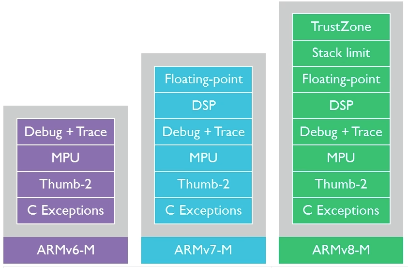RISC-V、ARM其实都是ISA的统称，具体的ISA应该是RV32IA、ARMv7-M这样的
- 实例：
RISC-V：开源指令集架构，可扩展性强（RISC-V其实也是统称，它有很多具体版本比如RV32I）
ARMv8-A：支持64位计算，定义AArch64执行状态和异常模型
指令集
定义：CPU能够执行的所有机器指令的集合，是软件与硬件交互的基础规范。例如：x86支持复杂指令（如MMX、AVX），ARM支持精简指令（Thumb-2）
分类：
CISC（复杂指令集）：针对每一种功能都实现特定的指令，导致指令的数量较多，但生成的程序长度较短
RISC（精简指令集）：只实现基本的指令，复杂的指令由基本指令组成，这导致指令的数目较少，但生成的程序长度较长
CPU内核/微架构
英文：CPU Core/Microarchitecture
定义：CPU内核是对ISA的==具体实现==，并关注性能、功耗、面积等优化。一般以IP核的形式提供给SOC厂商，IP核又分为软核（提供RTL级实现）和硬核（提供电路布局级实现）。如果有了软核，可以直接将RTL映射至FPGA，即可用FPGA进行物理时序的验证
核心内容：
- 流水线设计：级数、乱序执行（如 Intel 的
Out-of-Order）、分支预测策略 - 缓存层次：各级Cache的大小、替换算法（如 LRU）
- 并行计算单元：超标量（Superscalar）、SIMD（如 NEON/AVX）
- 功耗管理：动态电压频率调整（DVFS）、时钟门控
- 物理设计：晶体管布局、时序优化
- 流水线设计：级数、乱序执行（如 Intel 的
实例:
- Cortex-A77 是 基于ARMv8-A 的一种CPU内核，采用 4 宽解码、128 ROB（重排序缓冲区）
- Apple M1 基于 ARMv8.5-A ISA，但使用自研 Firestorm/Icestorm 微架构
- 玄铁C906是RISCV64GCBV ISA的CPU内核
关系与对比
| 层级 | 定义范围 | 稳定性 | 示例 |
|---|---|---|---|
| ISA | 指令、寄存器、内存模型 | 长期稳定 | ARMv8-A、RISC-V |
| Microarchitecture | 流水线、缓存、功耗优化 | 厂商私有，频繁迭代 | Cortex-A78、Apple M2 |
| Architecture | 多核、总线、外设集成 | 依赖生态需求 | AMBA 总线、Intel Hybrid 架构 |
MMU不同层级的内容
1.ISA层级：规定 MMU 的行为规范，但不涉及具体硬件实现
地址转换机制：规定是否支持分页（如 ARMv8-A 的 4KB/64KB 页）、页表格式（如 ARM 的
Descriptor Table）特权控制：定义哪些指令/模式可访问页表（如
x86的CR3寄存器、ARM的TTBR0）异常类型：触发缺页异常（Page Fault）的条件（如权限错误、非法地址）
示例：
- ARMv8-A 要求 MMU 支持 48 位虚拟地址和 4 级页表
- RISC-V 的
Sv39模式定义三级页表结构
2.微架构层级：决定 MMU 具体实现与优化，是厂商优化的重点
- TLB（快表）设计：容量方式（全关联/组相联）、替换策略（LRU/Random）
- 多级页表缓存：硬件预取页表项（如 ARM 的
Walk Cache） - 并行查表：支持多级页表并行访问以降低延迟
- 物理实现：与流水线的协同（如 MMU 与 Load/Store 单元的交互）
- 示例：
- Intel Skylake 的 MMU 采用 多级 TLB（L1/L2）和 硬件页表遍历器
- Cortex-A72 的 MMU 支持 2MB 大页缓存以减少 TLB 缺失
3.体系结构层级：关注 MMU 在系统中的角色，而非具体电路设计
- 总线协议：MMU 如何与系统总线（如 AMBA AXI）交互
- 多核一致性：MMU 在 Cache 一致性中的作用（如 ARM 的
SCU监听控制） - 安全扩展：MMU 如何支持 TrustZone 或虚拟化（如第二阶段地址转换）
机器指令、汇编、编程语言的区别
指令集：**一个CPU真正支持的所有操作的==集合==**。它定义了 CPU 能够执行的指令类型、每条指令的操作码及其格式、操作数类型等。不同架构的CPU（x86、ARM、MIPS等）的主要区别之一就是指令集不同
机器指令：机器指令是CPU可以直接运行的二进制代码，一条机器指令就是指令集中的一条元素，对应CPU支持的特定操作，例如数据传送、算术运算、逻辑操作、控制流等
汇编语言：汇编语言是对机器指令的一种封装，使得用户可读（机器指令是二进制的，用户不可读），汇编是个动词，指的是将汇编语言转成CPU可以运行的机器指令。汇编这个过程类似编译，也需要一个程序（汇编程序）来完成，汇编相较于编译更为简单，通常只涉及将汇编指令映射为机器码。
由此可见汇编不具有跨平台的特性，在X86架构的CPU写的汇编，拿到ARM架构的CPU大概率不可用，因为指令集都不一样
汇编中指令和伪指令的区别
- 指令：对应于CPU支持的机器指令，汇编时直接映射为机器码
- 伪指令：辅助汇编程序编写和组织代码的数据定义和控制指令，不对应于CPU支持的机器指令，汇编时被转换为几条机器码
3.CPU/SoC/MCU/MPU等的区别
CPU就是上面提到的CPU内核，包括运算器、控制器、寄存器、Cache等
SoC是将一个完整的系统整合到单一芯片上的集成电路，包括 CPU、GPU、内存控制器、输入/输出接口、通信模块、GPU/NPU之类的加速芯片等
MCU是一种集成了CPU、内存（如闪存、RAM）、以及多种外设（如ADC、DAC、串行通信接口、定时器等）于一体的芯片，可以看成简易版的SoC
MPU：CPU的一种封装，不带各种外设，并不是MCU的复杂版
x86架构的电脑通常会有个主板，将CPU和各个外设通过总线连接，而嵌入式系统的SOC/MCU是把CPU和各个外设都集成到了一个芯片里，这是他们很大的一个区别
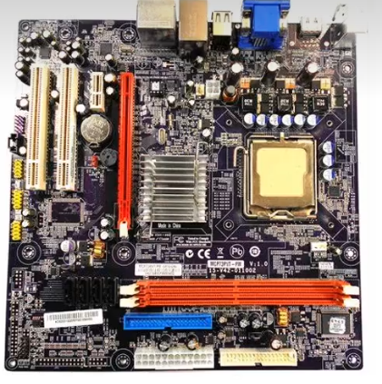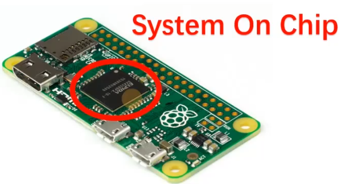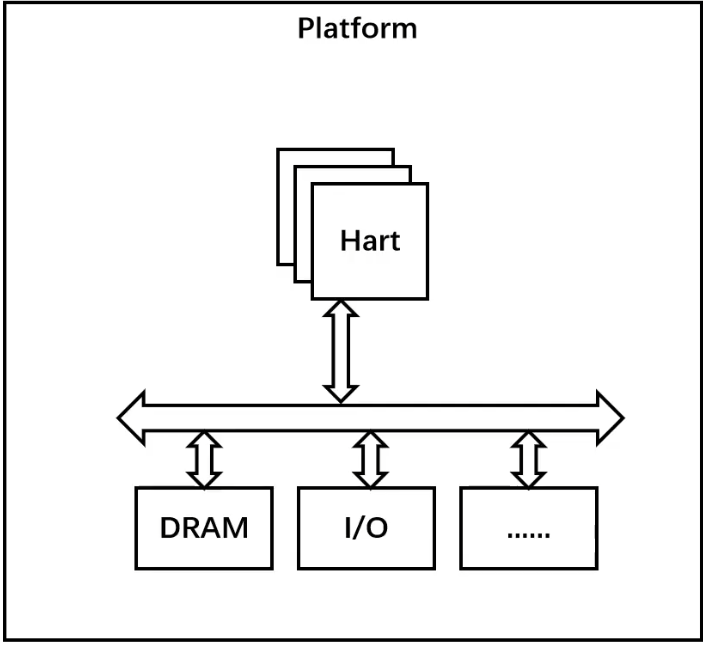
MCU和SoC的区别主要体现在：
- 处理能力
- 应用场景
- 功耗
- 集成度：MCU集成的资源有限，主要用于控制任务，而非复杂计算；而SOC通常是一个完整的系统集成在一块芯片上，集成度更高，比如有MCU上没有的屏幕驱动部分、GPU等
由于SOC中集成了很多模块，那么软硬件工程师的工作量也会减少，如果用裸CPU，那么什么RAM、FLASH的电路都得自己画，但是如果SOC自带了，那么就不需要了啊
怎么理解ARM授权
ARM公司其实是CPU内核的设计厂商，只做CPU内核的设计，并不制造
而其他半导体厂商，比如ST、华为之类的，要生产的SOC肯定里面要用到CPU内核，那么就得向ARM公司买他们设计好的内核（可以理解为ARM只卖DNF装备的设计图）
授权又分为多种：
- 架构层级授权：可以对ARM内核进行大幅度改造，甚至可以修改指令集，总而得到一个新的架构（苹果的Swift架构）
- 内核层级授权：可以以ARM内核为基础再加上自己的外设，最后形成一个MCU或SOC（TI、ST公司）
- 使用层级授权：只能把定义好的IP核拿来用，不能修改或再封装自己的产品
4.指令集架构(ISA)
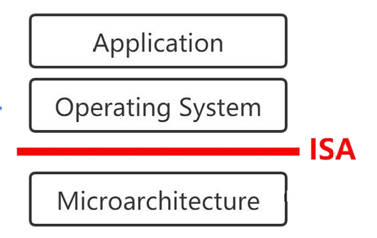定义
指令集架构（Instruction Set Architecture，ISA）是底层硬件电路面向上层软件提供的一层接口规范，包括：
- 基本数据类型：byte、word、half word
- 寄存器
- 指令
- 寻址类型
- 异常或中断的处理方式
- 支持的特权模式，如Machine Mode、User Mode、Supervisor Mode…
- …
指令集架构只是一种规范和约束，让编程者无需关心底层的硬件电路。
- 可以理解为指令集(架构)相当于抽象类，硬件电路为子类具体的实现
我们常说的CPU的架构其实就是指的是CPU的指令集架构（ISA），比如x86_64、ARMv7a、ARMv7m…
ISA的宽度
定义：指的是CPU中通用寄存器的宽度（二进制的位数），这决定了寻址范围的大小，以及数据运算的能力。这与指令的宽度不同，比如RISCV架构CPU有32位也有64位，但指令的宽度都是32位。
ISA的具体实现
前面提到了ISA层只是给出了一些接口规范，但具体实现是需要各个厂家通过具体的硬件电路来做，这属于ISA层之下的MicroArchtecture层。
比如常见的ISA的实现有x86、ARM、RISC-V、MIPS…，但是ISA的实现也只是给出了一些规范和接口，后面就是通过硬件电路实现这些接口：Intel、AMD、华为、高通、ST…
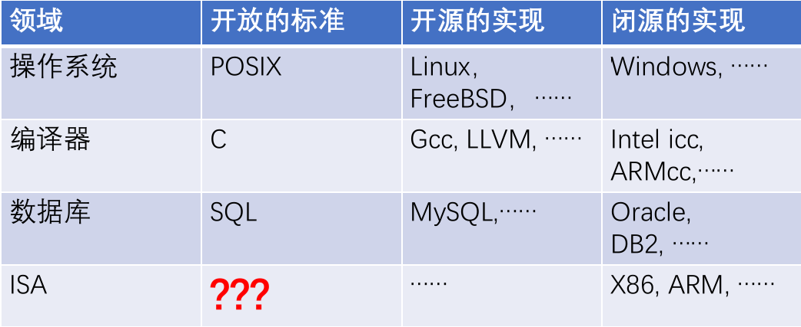这种 “规范 + 实现” 的方式在其他领域也可以看见！
5.ARMv7A ISA
之前用的ARM Cortex A7的CPU内核的指令集架构是ARMv7A，现在对该ISA进行分析
寄存器
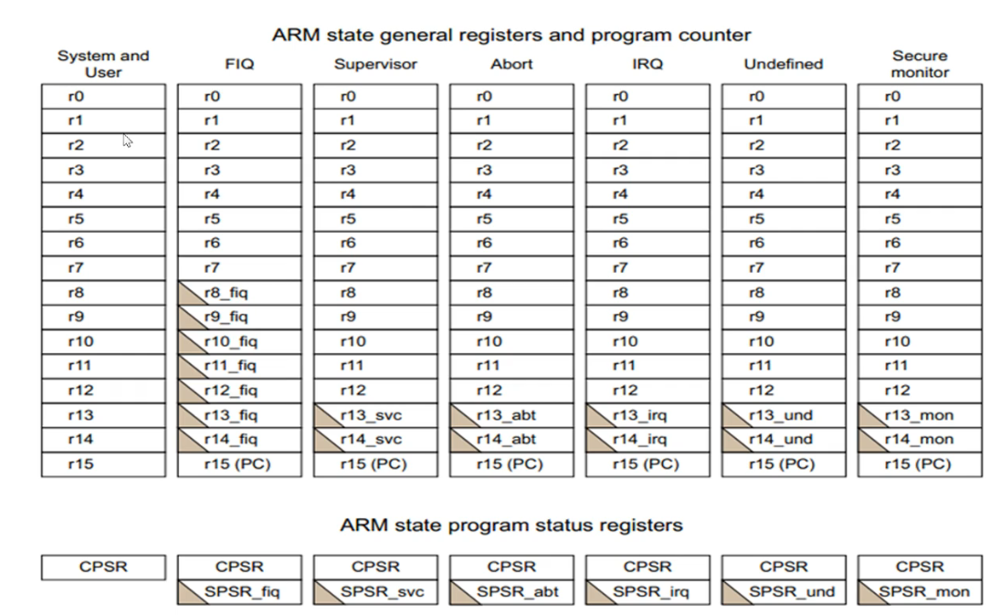
上面带三角的寄存器，在CPU不同的模式有不同的作用
ARMv7A规范中共有40个寄存器，33个通用寄存器，7个状态寄存器
通用寄存器（R0~R15），通用寄存器可以分为以下三类：
- 未分组寄存器（R0~R7）
- 在CPU的所有模式下都指向同一个物理寄存器，未被用于特殊用途，一般就用来暂存数据、传递函数参数、返回值、返回地址等
- 发生函数跳转时，会造成此类寄存器数据的破坏，因此需要保存当前的数据到栈空间中，即==保存上下文==，实际上就是在进程的栈区里创建一个栈帧保存当前各个寄存器的值
- 分组寄存器（R8~R14）
- CPU每次到底访问哪个分组寄存器，与当前的运行模式有关
- R8~R12：一共2组，一组用于fiq模式，一组用于其他所有模式
- R13、R14：一共7组，一组用于user模式和system模式；其他所有模式各一个
- R13(SP)：堆栈指针寄存器，由于CPU每个模式都有自己的SP指针（==即不同模式的栈是独立的==），故在上电初始化时，需要给各SP指针分配好栈空间
- R14(LR)：链接寄存器，在发生程序跳转时（函数调用、异常…），LR会备份PC的值，用于在跳转后的部分执行完毕时，继续执行当前的代码
- 程序计数器 ：R15（PC指针）
- 未分组寄存器（R0~R7）
程序状态寄存器
- CPSR：当前程序状态寄存器
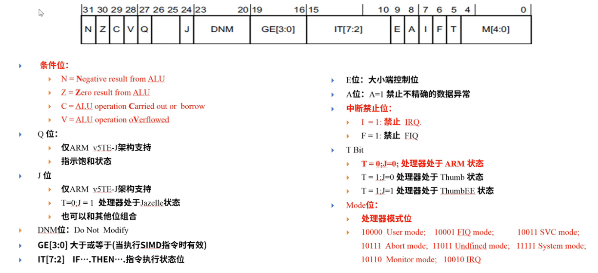
注意：ARMv7A同时支持Thumb指令集和ARM指令集，且可以通过T位动态切换
- SPSR：备份的程序状态寄存器，CPU各模式的该寄存器是独立的，当发生模式切换时，会在目标模式的SPSR寄存器里备份CPSR的值
处理器模式
ARMv7A系列主要包含8种处理器模式（他们分处于2种特权等级）：
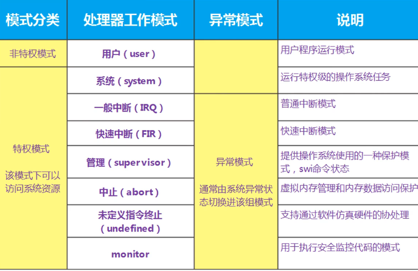重点掌握：用户模式、一般中断模式、管理模式
用户模式
- 用户程序的工作模式，运行在操作系统的用户态
- 没有权限操作硬件资源
- 无法直接切换到别的模式，如果想要访问硬件或者切换到别的模式，只能通过软中断（SWI指令）或者异常
我们写的大部分应用程序都工作在用户模式，只有需要访问硬件时，比如
printf时，会进入别的模式
一般中断模式
- 也叫普通中断模式，用于处理一般的中断请求
- 在硬件产生中断信号后，自动进入该模式
- 属于特权模式，可以自由访问硬件资源
管理模式(SVC)
- CPU上电时进入的默认模式，主要用于硬件的初始化
- 用户模式的应用程序要访问硬件时，需要通过软中断（SWI）进入特权模式，则会进入该模式
之前所学习的进入内核态的
syscall指令（它是汇编中的一个助记符），其实就是对SWI的包装
ARMv7A的异常
异常的概念：由CPU执行指令所导致的原来运行的程序的终止
ARMv7A的异常源：
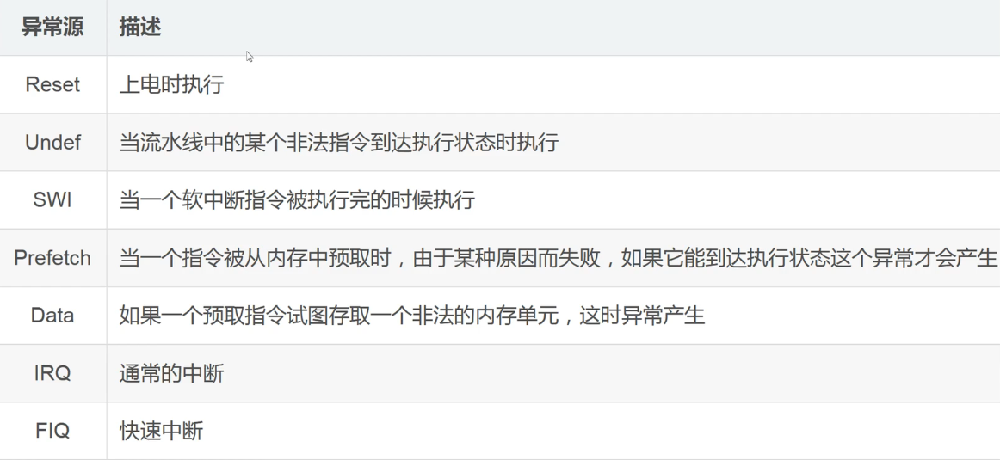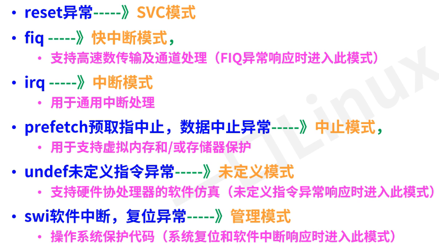不同的异常源会使CPU进入不同的工作模式
ARMv7A异常处理流程
一、硬件阶段：四大步、三小步
1.保存当前CPU的状态：将CPSR寄存器的值复制到目标模式的SPSR寄存器中
2.模式切换：
- 设置CPSR寄存器的模式位与目标模式一致
- 处理器切换到ARM指令集模式
- 禁用所有IRQ中断或FIQ中断，防止中断嵌套
3.保存返回地址：将被打断程序的下一条指令的地址保存到目标模式的LR寄存器
4.跳入异常向量表：将PC指针的值强制设为当前异常对应的固定的内存地址（看异常向量表）
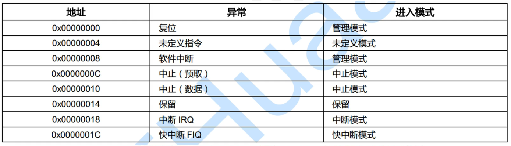
STM32的中断向量表代码里长这样：
1 | __Vectors DCD __initial_sp ; Top of Stack |
__initial_sp、xxx_Handler就是各个异常的处理函数，DCD是一个伪指令，但也能完成跳转
二、异常处理
1.保存现场：将R0~R12、LR寄存器的值保存到对应异常模式的栈空间中
2.对异常进行处理
三、返回
1.恢复被打断程序的R0等寄存器
2.恢复被打断程序的CPSR寄存器
3.修正进入异常时保存到LR寄存器的值，返回被打断程序继续执行
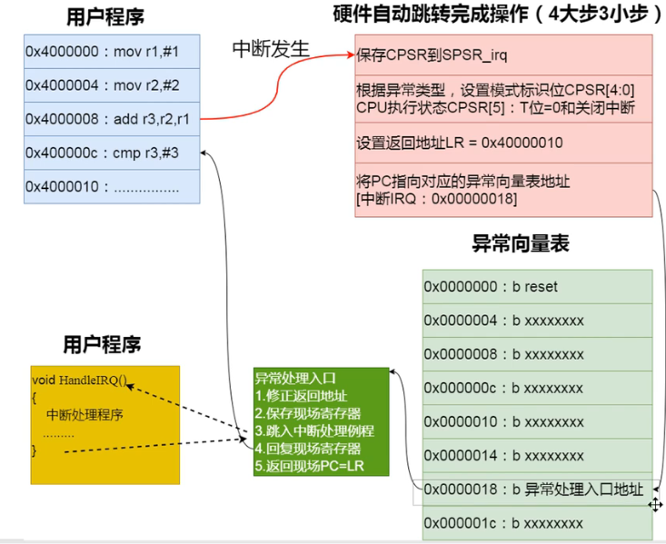软中断
SWI指令的格式为：SWI{条件} 24位的立即数
SWI指令会产生“软件中断”这种异常，OS会在软件中断的异常处理函数中提供相应的系统服务，这其实就是==系统调用的过程==！
指令中的24位立即数指定了调用哪个系统调用，如果缺省的话则由R0寄存器决定